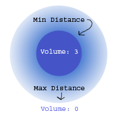

|
Sound shaders are completely new for Doom 3. They allow for more control over the sounds
than what was previously allowed in id engines. They also allow designers to drop sounds
in levels without having to set some common parameters every time.
Let's take a look at a simple sound shader:
c1_sentry_loader_in
{
minDistance 10
maxDistance 25
no_occlusion
volume 3
sound/movers/comm1/sentry_loader_in.wav
}

minDistance / maxDistance sets the radius where the sound fades out. The sound is at maximum
volume inside 'minDistance' radius, and it completely silent after 'maxDistance' radius.
The no_occlusion key tells the engine not to take level geometry in to account when calculating
volume.
'volume' is the volume inside the inner radius of the sound.
The last line sets the actual sound file to play.
Let's take a look at another one:
emetal_impacts
{
minDistance 5
maxDistance 45
volume 5
no_dups
sound/impact/ambient_impacts/emetal_01.wav
sound/impact/ambient_impacts/emetal_02.wav
sound/impact/ambient_impacts/emetal_03.wav
sound/impact/ambient_impacts/emetal_04.wav
sound/impact/ambient_impacts/emetal_05.wav
}
This one has multiple sound files specified, which means the engine will randomly choose one to play.
The cvar s_maxSoundsPerShader limits the maximum number of sounds that can be in a shader. This is set
to 0 (no limit) for high end systems and 1 for low end systems (which means it always plays the first
sound in the list).
Here's a list of all the keywords that can be in a sound shader
| minSamples <int> | Overrides s_maxSoundsPerShader |
| description <string> | A short message describing the sound |
| minDistance <float> | The closest you can get to the sound before it goes to full volume |
| maxDistance <float> | The furthest you can get from the sound before it goes to zero volume |
| shakes [float] | Shake the screen when this sound plays. The shake intensity is volume multiplied by [float] (which defaults to 1)
*Should not be used with .ogg files* |
| volume | The maximum volume for this sound (volume inside minDistance) |
| leadinVolume | The volume of the leadin sound (used to allow light breaking leadin sounds to be much louder than the broken loop) |
| mask_center | Play through the center channel |
| mask_left | Play through the left channel |
| mask_right | Play through the right channel |
| mask_backleft | Play through the left rear channel |
| mask_backright | Play through the right rear channel |
| mask_lfe | Play through the low frequency channel (subwoofer) |
| soundClass <int> | sound classes are used to fade most sounds down inside cinematics, leaving dialog flagged with a non-zero class full volume |
| altSound <sound> | Used for pairing a specific broken light sound with a normal light sound |
| no_dups | Don't play the same sound twice in a row |
| no_flicker | Always return 1.0 for volume queries |
| looping | Repeat the sound constantly |
| no_occlusion | Don't flow through portals, only use a straight line |
| private | Only plays for the current listener |
| global | Play full volume to all speakers and all listeners |
| unclamped | Don't clamp calculated values at 1.0 |
| omnidirectional | Fall off with distance, but play same volume in all speakers |
| leadin <file> | Sound file to use for the lead-in to a looping sound |
If no channel masks are set, it will default to playing through all channels.
Valid sound files are 1 or 2 channel, 16 bit OGG or WAV files at 11025, 22050 or 44100 Hz.
|